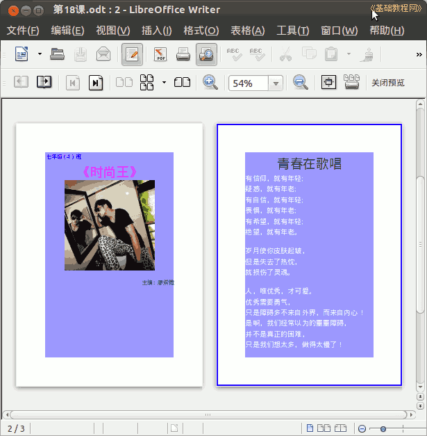

2011-2012 第二学期七年级文字处理和网页教学设计
作者：TeliuTe 来源：基础教程网
十八、学会制作文集 返回目录 下一课
（一）教学设计
1、学习目标：学会制作文集
2、注意事项：接着上一节课的接着往下做，选另存为
3、教学过程：
1）教师准备学案和板书；
2）学生整队进入，开机抄黑板上笔记；
3）教师讲解板书演示操作；
4）学生打指法、日志、完成操作；
5）教师打勾记录学生指法成绩，检查日志和操作；
注：学生抄完笔记就开始打指法、日志，老师讲完后再继续完成；
（二）板书设计(学生笔记)
第18课 学会制作文集
1、打开上次的第17课，点文件、另存为第18课
2、点“工具、选项、装入、一般、2分钟”
3、输入自己的一篇作文，经常保存
4、修饰字体、颜色、插入图片
5、300字以上作文
操作图示：

（三）课后记 2012-4-23
计划一下差不多可以进行期中考试了，
然后接下来就开始学习网页制作
--
这节课和下节课两节课写一篇作文，
作为期中考试，期末估计没时间考
--
先让回去把作文找来，刚好九年级出了个诗集
讲一下让自己也做一个，接着上节课的
--
打开17课，然后另存为18
在最后打回车接着输入自己的作文
--
指法基本上还是有些慢，这样的实践操作不多
有机会自己再去练习，也可以把动作慢的找出来
--
用语文的作文本，让课代表去拿一下
然后用完记着再让收回来
--
从第一节课开始就留学生，说是弄写字的，英语作业没写的
这个初一看着也有些问题，学生基础差的有相当部分，学习跟不上也着急
--
把任务布置好，在词数统计里有个200多就可以了
两节课把一篇打完，要求是300字有些难了
--
主动学的也挺多，只是有差的就容易着急
其实也不可能都学好，却也无奈的
--
下节课把它打完再压缩上传，今天把uch2的附件修改一下
添加压缩格式的附件，但是是当作图片的所以显示不友好
--
要专门加个论坛也麻烦，看情况加一个也可以
服务器19:00多突然卡住，不知是访问的还是在运行什么程序
--
返回目录 下一课
本教程由86团学校TeliuTe制作|著作权所有
基础教程网：http://teliute.org/
美丽的校园……
转载和引用本站内容，请保留版权信息和本站链接。